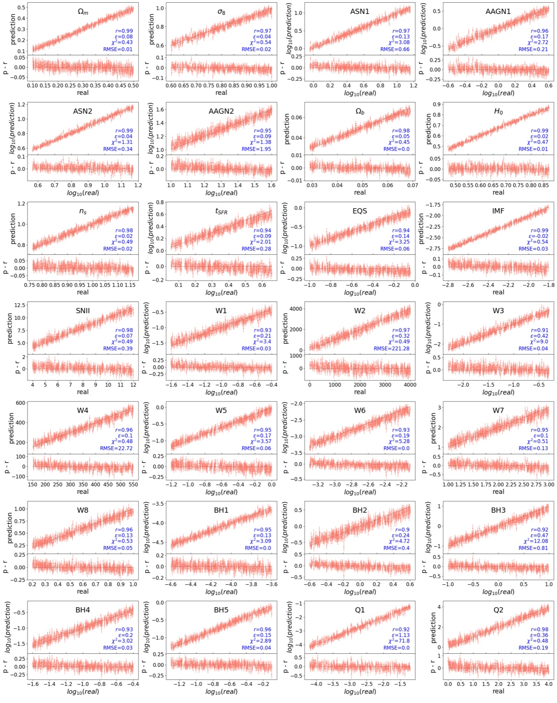

Likelihood-Free Inference on Cosmological Data
Inferring cosmological and astrophysical parameters from galaxy cluster profiles
Galaxy clusters are the largest gravitationally bound structures in the universe and retain the imprint of the cosmology in which they formed. Their observable properties, however, are shaped simultaneously by astrophysical processes such as feedback from active galactic nuclei, supernovae, and star formation. Separating these astrophysical effects from the underlying cosmological signal is a central challenge of cluster cosmology.
Parameter inference from stacked cluster profiles
In Hernández-Martínez et al. (2025) we study the inference of cosmological and astrophysical parameters from stacked galaxy cluster profiles. Using the CAMELS-zoomGZ simulations, we consider five observable cluster properties: X-ray surface brightness, gas density, temperature, metallicity, and Compton-y profiles. Neural networks trained on these profiles predict the parameters of the 28-dimensional IllustrisTNG model, recovering all cosmological parameters, including Ωm, H0, and σ8, with correlation coefficients of 0.97 or above, and the remaining astrophysical parameters with correlations above 0.90.

To assess the applicability of the method to observations, we investigate the impact of different radial cuts, with bins ranging from 0.1 R200c to 0.7 R200c, and perform a noise sensitivity analysis with up to 40% Gaussian noise, corresponding to signal-to-noise ratios as low as 2.5. Key parameters such as Ωm, H0, and the slope of the initial mass function remain robust even under extreme noise conditions. Comparing full radial profiles against integrated quantities, we find that profiles generally lead to more accurate parameter inference.
Read the paper on arXiv Watch the presentation
Cosmological and Astrophysical Parameter Inference from Stacked Galaxy Cluster Profiles Using CAMELS-zoomGZ, E. Hernández-Martínez, S. Genel, F. Villaescusa-Navarro, U. P. Steinwandel, M. E. Lee, E. T. Lau, and D. N. Spergel, The Astrophysical Journal, 981, 170 (2025). · recording of the talk
The talk
The CAMELS connection
This work is part of CAMELS (Cosmology and Astrophysics with MachinE Learning Simulations), a large suite of cosmological simulations in which cosmological and astrophysical parameters are varied systematically to enable machine learning applications in cosmology. In addition to using the suite, I contribute simulations based on the Magneticum galaxy formation model, extending CAMELS with an independent implementation of galaxy formation physics and allowing inference methods to be tested for robustness across different models.